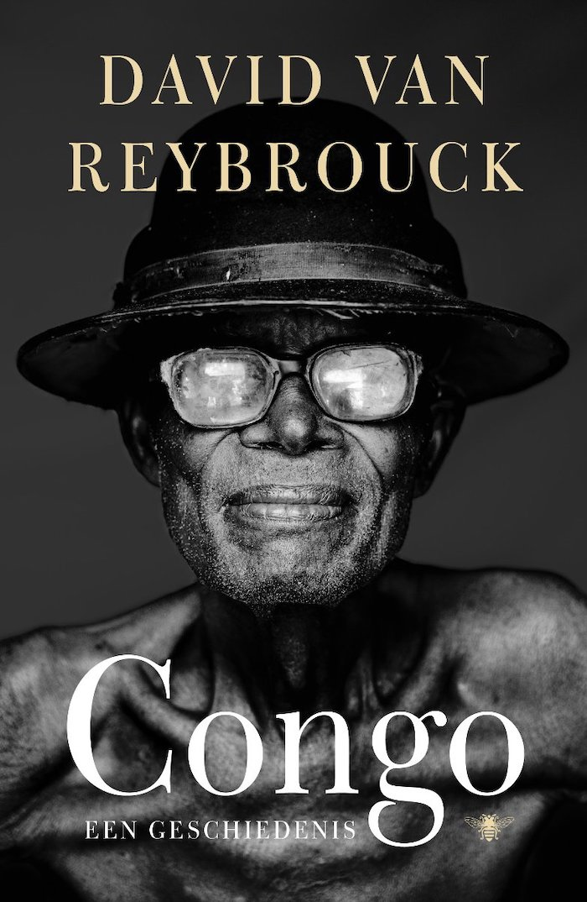
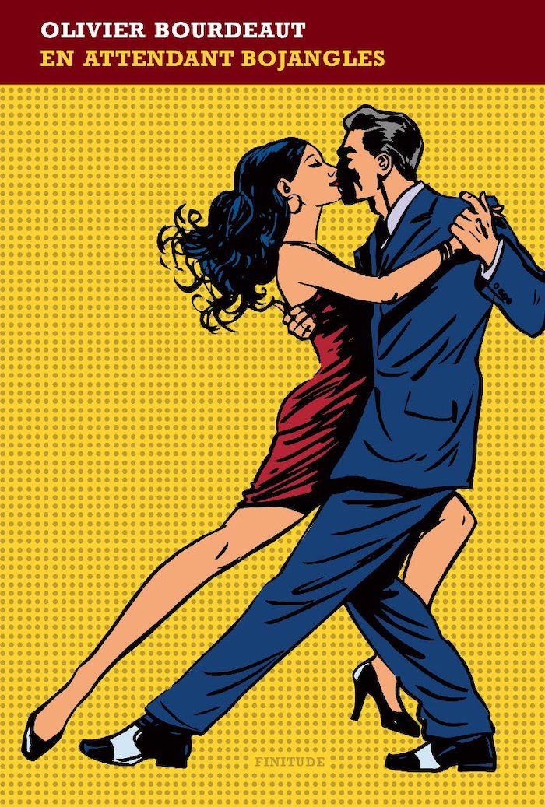
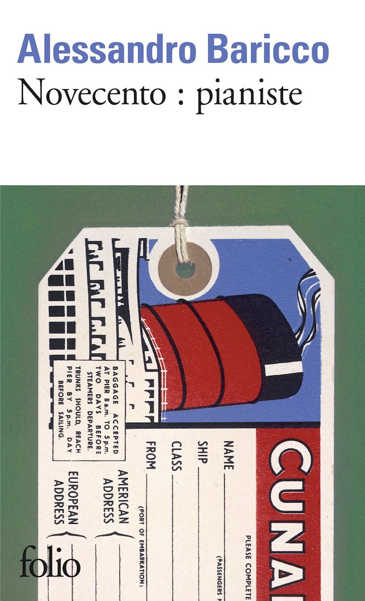

|  |
Congo. Une histoire.David Van ReybrouckCe livre est l'histoire, fidèle, rigoureuse, éminemment documentée et absolument romanesque d'un pays. |
|  |
En attendant BojanglesOlivier BourdeautDevant leur petit garçon, ils dansent sur "Mr. Bojangles" de Nina Simone. Chez eux, il n'y a de place que pour le plaisir et la fantaisie. Celle qui mène le bal, c'est la mère, feu follet imprévisible. Elle les entraîne dans un tourbillon de poésie pour que la fête continue, coûte que coûte. L'amour fou n'a jamais si bien porté son nom. |
|  |
Novecento, PianisteAlessandro BariccoNé lors d’une traversée, Novecento n’a jamais mis le pied à terre. Il passe sa vie sur l’Atlantique les mains posées sur un piano, à composer une musique étrange et magnifique, qui n’appartient qu’à lui : celle de l’Océan. |